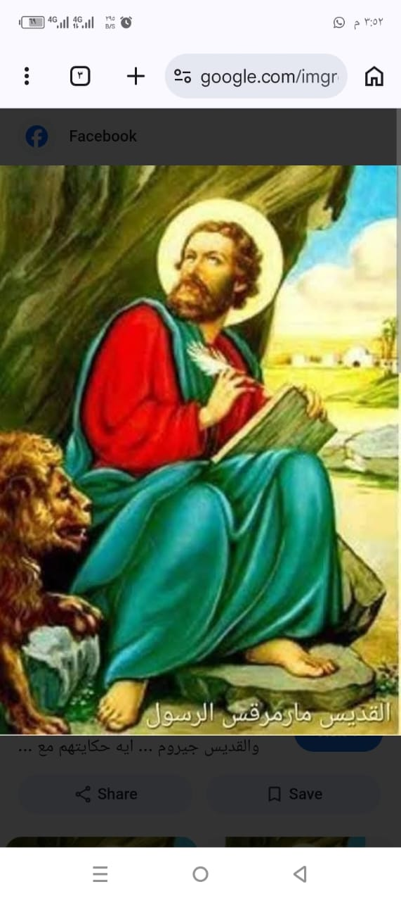
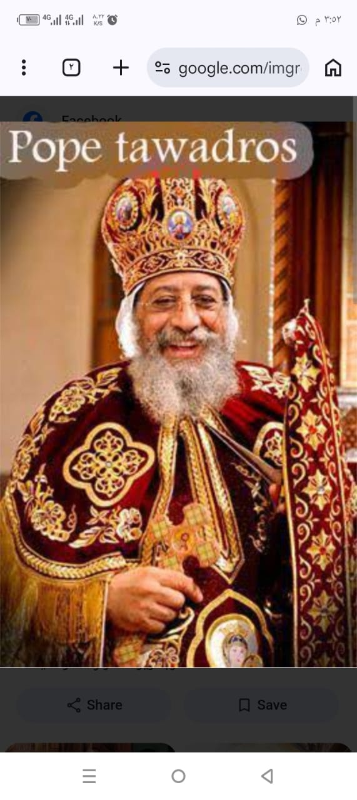
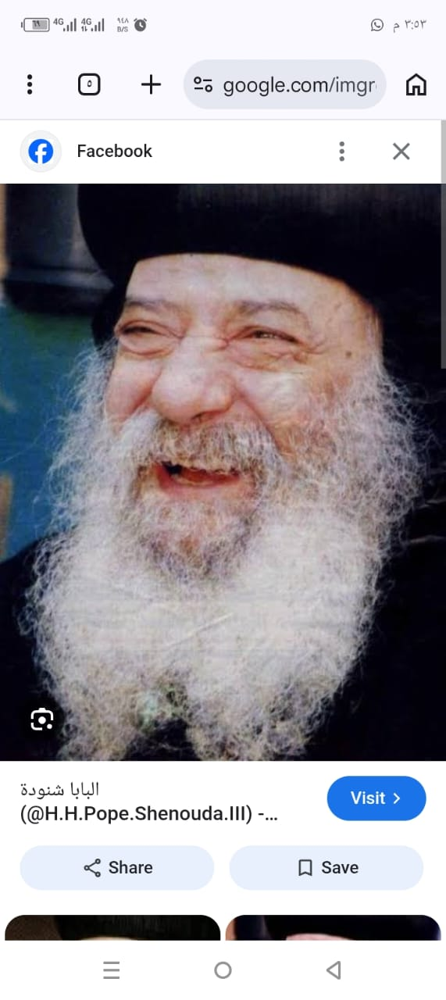
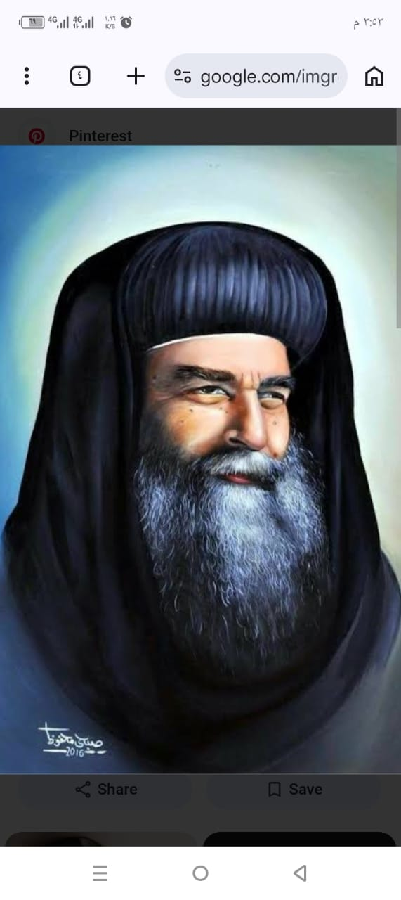

هناك 118 بطريرك في كنيستنا
هذه معلومات عن اول بطريرك في كنيستنا
تاريخ اول بطريرك في الكنيسة القبطية
1- البابا مرقس الأول
(القديس مارمرقس الرسولي)
(61 - 68 م.)
المدينة الأصلية له: أدرنا بوليس ( الخمس مدن الغربية)
الاسم قبل البطريركية: يوحنا مرقس بن أرسطوبولس
تاريخ التقدمة: أول بشنس - 27 أبريل 61 للميلاد
تاريخ النياحة: 30 برموده - 26 أبريل 68 للميلاد
مدة الإقامة على الكرسي: 7 سنوات
محل الدفن: كنيسة بوكاليا / كنيسة العباسية
الملوك المعاصرون: نيرون
الأساقفة الذين رسمهم: قائمة الآباء الأساقفة الذين قام برسامتهم قداسة البابا مرقس الأول البطريرك رقم 1
معلومات عن البابا كيرلس السادس
البابا كيرلس السادس (1902–1971) هو البطريرك الـ 116 للكنيسة القبطية الأرثوذكسية، ويُعرف بـ "رجل الصلاة". وُلد باسم عازر يوسف في دمنهور، وترهب بدير البراموس باسم "مينا". تميز بزهده الشديد، وأسس دير مارمينا بمريوط، واُختير للكرسي المرقسي عام 1959. ا
عترفت به الكنيسة قديساً عام 2013.إليك أبرز المحطات والمعلومات في حياته:المولد والنشأة: وُلد في 2 أغسطس 1902 بمدينة دمنهور، من عائلة تقية، وعمل في شبابه موظفاً في شركة الملاحة.الرهبنة: دخل دير البراموس بوادي النطرون عام 1927، وسيم راهباً باسم "مينا
البراموسي"، ثم قساً عام 1931. عاش حياة التوحد في طاحونة مهجورة بمصر القديمة.السيامة بطريركاً: في 10 مايو 1959، أقيمت له صلوات القرعة الهيكلية ليصبح البابا رقم 116 للكنيسة المرقسية بالإسكندرية.أبرز الإنجازات:بناء دير مارمينا العجايبي بمريوط وإحياء ا
لمنطقة.وضع حجر الأساس لـ الكاتدرائية المرقسية الكبرى بالعباسية بالقاهرة.استعادة رفات القديس مارمينا من أوروبا.النياحة: تنيّح في 9 مارس 1971 ودُفن تحت مذبح الكاتدرائية، ثم نُقل رفاته إلى دير مارمينا بمريوط
معلومات عن البابا شنوده الثالث
كان البابا شنودة الثالث (1923–2012) بابا الإسكندرية وبطريرك الكرازة المرقسية الـ117. قاد الكنيسة القبطية الأرثوذكسية لأكثر من 40 عاماً، ولُقب بـ"بابا العرب" لدوره الوطني والقومي البارز. تميز بعمقه اللاهوتي، وموهبته الشعرية والأدبية، وبراعته في الخطابة.إليك أبرز المحطات والمعلومات في حياته:المولد والنشأة: وُلد باسم "نظير جيد روفائيل" في 3 أغسطس 1923 بقرية "سَلاَّم" في محافظة أسيوط.التعليم: تخرج في جامعة فؤاد الأول (القاهرة حالياً) حاصلاً على ليسانس الآداب قسم التاريخ، ثم التحق بالكلية الإكليريكية.الرهبنة والخدمة: ترهب في دير السريان عام 1954 باسم "الراهب أنطونيوس السرياني"، وعُين أسقفاً للمعاهد الدينية والتربية الكنسية عام 1962.التنصيب البابوي: جلس على كرسي مار مرقس في 14 نوفمبر 1971، ليصبح البابا الـ117 للكنيسة القبطية.الوفاة: تنيّح (توفي) في 17 مارس 2012 عن عمر ناهز 89 عاماً، ودُفن في دير الأنبا بيشوي بوادي النطرون
معلومات عن البابا تواضرس الثاني
البابا تواضروس الثاني هو بابا الإسكندرية وبطريرك الكرازة المرقسية، وهو البابا رقم 118 في تاريخ الكنيسة القبطية الأرثوذكسية. تولى منصبه في نوفمبر 2012، ويُعرف بخلفيته الأكاديمية وقيادته للكنيسة في مراحل هامة.النشأة والتعليمالاسم عند الميلاد: وجيه صبحي باقي سليمان.تاريخ الميلاد: 4 نوفمبر 1952، بمدينة المنصورة.المؤهل العلمي: تخرج من كلية الصيدلة بجامعة الإسكندرية عام 1975، وحصل لاحقاً على زمالة الصحة العالمية بإنجلترا.الحياة الرهبانية والكنسيةالرهبنة: دخل دير الأنبا بيشوي بوادي النطرون عام 1986، ورُهبِن عام 1988 باسم "الراهب تواضروس الأنبا بيشوي".الأسقفية: رُسِم أسقفاً عاماً لإدارة خدمات إيبارشية البحيرة عام 1997.البابوية (البطريركية)الانتخاب: تم تجليسه واختياره للكرسي البابوي في 18 نوفمبر 2012، خلفاً للبابا الراحل شنودة الثالث.الإنجازات: أشرف على إعداد "الميرون المقدس" عدة مرات خلال حبريته، وأسس العديد من الإيبارشيات والأسقفيات الجديدة داخل مصر وخارجها، ولعب دوراً بارزاً في تعزيز الحوار المسكوني والعلاقات مع مختلف الكنائس حول العالم